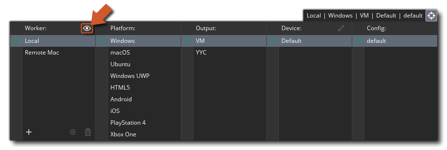
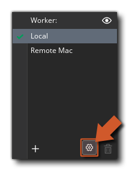

Lorsque vous compilez votre jeu, vous utilisez généralement le worker "Local", qui est l'ordinateur sur lequel GameMaker Studio 2 a été installé. Cependant, dans certaines circonstances, vous devrez peut-être utiliser un autre ordinateur pour créer vos projets. Par exemple, si vous travaillez sur un Mac et que vous voulez construire un projet Windows, alors vous voudriez configurer un travailleur à distance et faire construire un PC Windows. Essentiellement, lorsque vous utilisez un travailleur distant, GameMaker Studio 2 envoie tous les fichiers requis de la machine (locale) sur la machine de travail à distance, puis utilise cette machine pour créer l'exécutable final du projet (soit en sauvegardant sur la machine distante, ou le renvoyer à la machine locale par la suite). Cependant, avant de pouvoir utiliser cette fonctionnalité, vous devrez avoir installé certains outils sur la machine de construction et effectué quelques réglages, ce que nous allons expliquer ici.
Pour configurer un travailleur distant, vous devez d'abord installer l'application de création de travail Remote Worker sur le PC à utiliser. Vous pouvez trouver cet outil en allant dans le menu Build de GameMaker Studio 2 sur la machine locale et en sélectionnant l'option "Show Remote Worker Installer":
Vous pouvez également cliquer sur l'icône "œil" dans le Gestionnaire de cible et obtenir le programme d'installation de Remote Worker de cette manière: 
L'installateur s'appellera quelque chose comme " GameMakerStudio-Remote-Installer-X.X.X.XXX.exe "et vous devez le copier sur le PC que vous voulez utiliser en tant que travailleur à distance (vous n'avez pas besoin que GameMaker Studio 2 installé sur le worker à distance, juste ce programme) Une fois que vous l'avez copié sur le PC de construction, installez-le en suivant les instructions à l'écran et lorsque le programme d'installation est terminé, le système d'exploitation vous demandera peut-être d'accéder à votre réseau via le pare-feu.Lorsque vous autorisez l'accès, le programme d'installation ouvrira une page dans votre navigateur. Vous devez noter l'adresse IP et le numéro de port indiqués sur cette page, car vous en aurez besoin pour l'étape suivante.
Vous devez maintenant retourner à la machine sur laquelle GameMaker Studio 2 installé et cliquer sur le bouton Gestionnaire de cible.
pour ouvrir la fenêtre du Gestionnaire cible, accédez à la section Travailleur et cliquez sur le bouton Ajouter un travailleur
. Cela ouvrira alors la fenêtre suivante:
Ici, vous devez donner un nom à votre travailleur à distance (c'est ce qui sera affiché dans la liste des travailleurs dans le gestionnaire cible) et dans la section Nom d'hôte, ajoutez l'adresse qui vous a été indiquée et notée précédemment sur la machine, y compris le numéro de port.
Si tout s'est bien passé, vous devriez maintenant recevoir un message indiquant que vous pouvez vous connecter à la machine de travail à distance. Une fois que votre Remote Worker est installé et connecté à votre ordinateur IDE principal, vous devez aller configurer les paramètres de construction locale pour chaque plateforme (voir la section ci-dessous pour plus de détails) avant de pouvoir compiler votre projet.
La page des paramètres affiche les différents chemins et les paramètres de génération de l'application Remote Worker. En haut des paramètres, vous avez les différents chemins qui seront utilisés par l'application Remote Worker et avant de faire quoi que ce soit d'autre, ceux-ci doivent être révisés et définis sur des chemins alternatifs si nécessaire (en général, les chemins par défaut devraient être bien). Vous pouvez accéder à la page des paramètres Remote Worker en utilisant l'une des méthodes suivantes:
- Cliquez sur le lien "Paramètres" en haut de la page Remote Worker qui s'ouvre dans le navigateur de votre machine distante:
- Utilisez le bouton RMB sur l'icône de la barre Remote Worker pour ouvrir les paramètres dans le navigateur de votre machine distante:
- Sur votre machine locale, ouvrez le gestionnaire de cible et cliquez sur l'icône "cog"
top ouvre les paramètres du worker dans une fenêtre de votre machine locale: 
Cela montrera la page des paramètres où vous pouvez voir (et définir) les différentes options qui vous permettent de définir les chemins pour la construction de votre projet:
Après avoir vérifié les chemins de l'application Remote Worker à utiliser, vous pouvez définir (si nécessaire) les différents paramètres de construction locale. Différentes plates-formes nécessitent des outils de construction différents à installer sur le PC de construction et le travailleur distant devra être capable de les utiliser pour créer vos jeux via la page Paramètres. Les premiers paramètres ici sont les paramètres généraux:
Ici vous pouvez configurer le port pour le serveur d'aide et le port pour le débogueur à utiliser. Ceux-ci peuvent être changés si vous avez des problèmes de connexion lors de l'utilisation du module de débogage, mais en général, doivent être laissés à leurs valeurs par défaut.
Vous pouvez maintenant aller de l'avant et configurer les différentes options pour les plates-formes que le travailleur à distance peut construire pour:
- les fenêtres
Si vous avez accès à la plate-forme cible Windows, vous devriez pouvoir utiliser le travailleur distant sur le PC Windows immédiatement en utilisant l'option VM. Toutefois, si vous souhaitez utiliser YYC, vous devez également définir le chemin d'accès à Visual Studio sur le PC de build. Pour plus d'informations sur la configuration d'un PC Windows pour compiler vos projets, consultez l'article suivant du service d'assistance:
Une fois que votre Remote Worker est configuré et que vous avez terminé les paramètres de construction locale (voir la section ci-dessus), vous pouvez commencer à l'utiliser pour compiler vos jeux. Pour cela, il vous suffit de sélectionner Remote Worker dans la liste Target Manager, de sélectionner la plate-forme à tester / compiler, ainsi que d'autres options (comme le type de compilation ou la configuration), puis de cliquer sur Play
ou Créer un exécutable
.
REMARQUE: Les plates-formes disponibles dans le Gestionnaire cible vont changer en fonction des capacités de l'ordinateur Remote Worker, et toutes les cibles ne seront pas disponibles. Notez également qu'il n'existe pas de cible "Test" pour les travailleurs distants.
Si vous lisez simplement le projet, la machine Remote Worker le compilera et l'exécutera, mais si vous créez un exécutable, alors Remote Worker compilera le projet et retournera un *.zip fichier à la machine locale pour l'enregistrement.Il convient de noter que ni le bouton Déboguer
ni le bouton Nettoyer
sera disponible lors de l'utilisation d'un travailleur à distance. Notez également que vous ne pouvez effectuer qu'une seule compilation à la fois pour le moment.


Une fois que le Remote Worker est installé et exécuté sur votre machine distante, il apparaît dans la barre des tâches sous la forme d'une icône et vous pouvez cliquer avec le bouton droit de la souris pour afficher les options suivantes: 
- Ouvrir: ouvrez l'application Remote Worker dans votre navigateur par défaut.
- Afficher le journal: ouvrez le fichier journal du travailleur distant dans votre navigateur.
- Paramètres réseau: vous pouvez filtrer les machines sur lesquelles vous souhaitez envoyer des builds à la machine Remote Worker. Chaque filtre peut être un filtre de style CIDR ou un nom d'hôte d'une machine à autoriser. Vous devez savoir que si vous voulez que plusieurs machines se connectent à un travailleur distant, ou si vous mélangez des types de connexion (c.-à-d.: Filaire et wifi), vous devrez peut-être modifier la plage autorisée IP ici.
- Modifier les paramètres: ouvrez le menu des paramètres Remote Worker (expliqué dans la section Paramètres, ci-dessus).
- Quitter: quittez l'application Remote Worker. Cela signifie que vous ne pouvez plus vous connecter (ni compiler) avec l'application à partir d'une machine locale avant de redémarrer l'application Remote Worker.